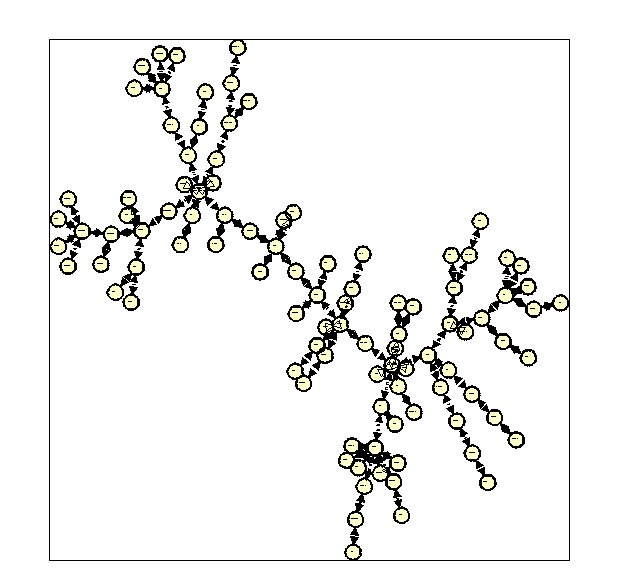
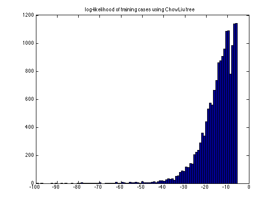
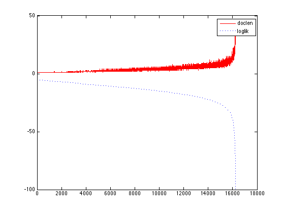

Find the MLE tree from a word-document binary matrix
loadData('20news_w100');
X = documents';
disp('mlapa chowliu demo')
model = treegmFit(X);
ll = treegmLogprob(model, X);
if ~isOctave()
drawNetwork('-adjMat', model.adjmat, '-nodeLabels', wordlist);
end
figure;hist(ll,100); title('log-likelihood of training cases using ChowLiu tree')
[junk, ndx] = sort(ll, 'descend');
chosen = [ndx(1:5)' ndx(end-2:end-1)'];
for i=1:length(chosen)
j = chosen(i);
fprintf('words in sentence %d with loglik %5.3f\n', j, ll(j));
wordlist(X(j,:))
end
doclen = sum(X, 2);
figure;
plot(doclen(ndx), 'r-');
hold on
plot(ll(ndx), 'b:')
legend('doclen', 'loglik')
mlapa chowliu demo
words in sentence 26 with loglik -5.323
ans =
'help'
words in sentence 44 with loglik -5.323
ans =
'help'
words in sentence 49 with loglik -5.323
ans =
'help'
words in sentence 105 with loglik -5.323
ans =
'help'
words in sentence 268 with loglik -5.323
ans =
'help'
words in sentence 638 with loglik -92.855
ans =
Columns 1 through 3
'aids' 'computer' 'course'
Columns 4 through 7
'data' 'display' 'dos' 'drive'
Columns 8 through 11
'email' 'files' 'format' 'ftp'
Columns 12 through 14
'graphics' 'help' 'human'
Columns 15 through 18
'image' 'israel' 'mac' 'nasa'
Columns 19 through 22
'number' 'pc' 'phone' 'power'
Columns 23 through 25
'president' 'program' 'research'
Columns 26 through 28
'satellite' 'science' 'server'
Columns 29 through 31
'shuttle' 'software' 'space'
Columns 32 through 34
'system' 'technology' 'university'
Columns 35 through 37
'version' 'video' 'windows'
Column 38
'world'
words in sentence 13159 with loglik -97.077
ans =
Columns 1 through 3
'card' 'case' 'children'
Columns 4 through 6
'computer' 'dealer' 'disease'
Columns 7 through 9
'doctor' 'email' 'evidence'
Columns 10 through 12
'fact' 'files' 'ftp'
Columns 13 through 15
'government' 'gun' 'health'
Columns 16 through 19
'help' 'hit' 'human' 'image'
Columns 20 through 22
'jews' 'law' 'medicine'
Columns 23 through 25
'memory' 'number' 'phone'
Columns 26 through 28
'president' 'problem' 'program'
Columns 29 through 31
'question' 'research' 'rights'
Columns 32 through 34
'science' 'server' 'state'
Columns 35 through 37
'studies' 'system' 'technology'
Columns 38 through 40
'university' 'version' 'video'
Columns 41 through 42
'war' 'world'
  